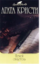

Убита молоденькая воспитанница недавно скончавшейся богатой пожилой дамы. Все улики указывают на другую наследницу состояния, причем обвиняемая даже умудряется сознаться в содеянном. Но Эркюль Пуаро подозревает, что все не так уж просто. Такова завязка романа "Печальный кипарис". В романе "Немой свидетель" Пуаро сталкивается с самым необычным свидетелем в своей блистательной карьере сыщика. Распутать тайну смерти женщины, умершей вроде бы от естественных причин, детективу помогут "показания"… фокстерьера по кличке Боб.